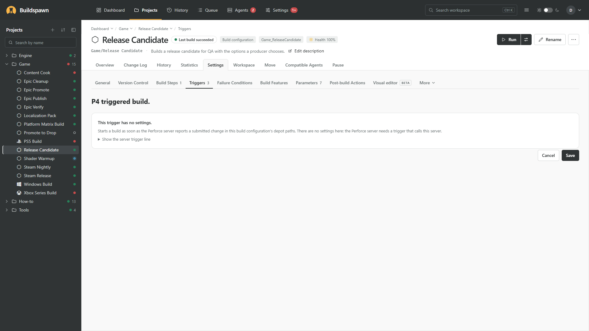

Perforce trigger (P4)
Starts a build when the Perforce server tells Buildspawn about a new change.
When to use it
Use it for the fastest start after a submit: no polling, no wait. The Perforce server calls Buildspawn on every submit, and Buildspawn checks the build configuration's roots for new changes.
How to set it up
- Open the build configuration and go to Settings › Triggers.
- Click Add new trigger and click Add next to P4 triggered build..
- The trigger has no settings. The page shows a line to set up on the Perforce server. Click the copy button.
- Click Save.
- On the Perforce server run
p4 triggersand add the line to the list of triggers. The page shows it with a user and an API token. Create the token in API tokens. The user needs the Build permission.

Every field
The trigger has no fields. What it needs is on the Perforce side:
| Part | What it does | Example |
|---|---|---|
| Trigger line | A change-commit trigger that posts the change number and server address to /p4/change of Buildspawn. | buildspawn change-commit //depot/... "curl -s -u USER:API_TOKEN -X POST -d payload={\"change\":%change%,\"p4port\":\"%serverport%\"} http://buildspawn/p4/change" |
| Credential match | Buildspawn starts only the build configurations whose Perforce credential has the same server address. | perforce:1666 |
A worked example
Skyforge has one Perforce server, perforce:1666. The Windows Build has a Perforce root with a credential for that server. After the trigger line is added, a submit to //depot/game/main starts a build within seconds.
What you see when it runs
The build configuration gets a P4 Trigger Log page. A line says P4: Changes found and the build starts, or P4: No changes. The build's cause is the version control trigger.
Problems and fixes
| Problem | What to do |
|---|---|
| Nothing happens on submit | Check the trigger line with p4 triggers -o, and that the server can reach Buildspawn. Open the P4 Trigger Log page. |
| The call is refused | The user needs the Build permission, and the API token must be valid. |
| The wrong server | The port in the call must be contained in the full port of the credential. |